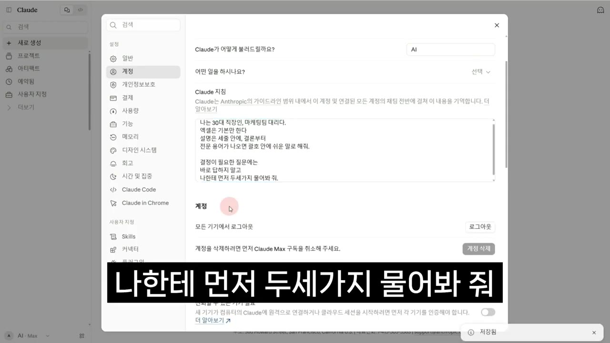
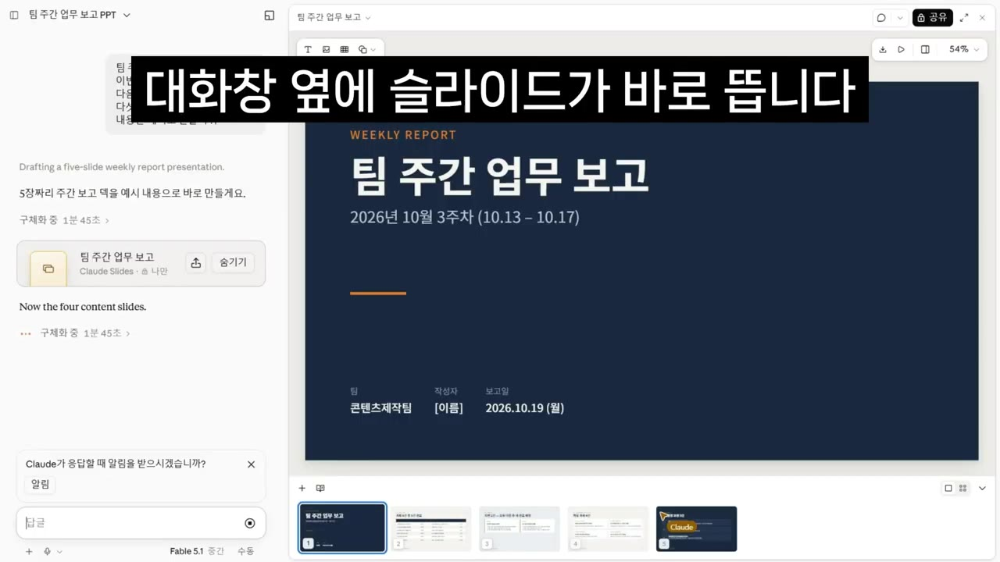
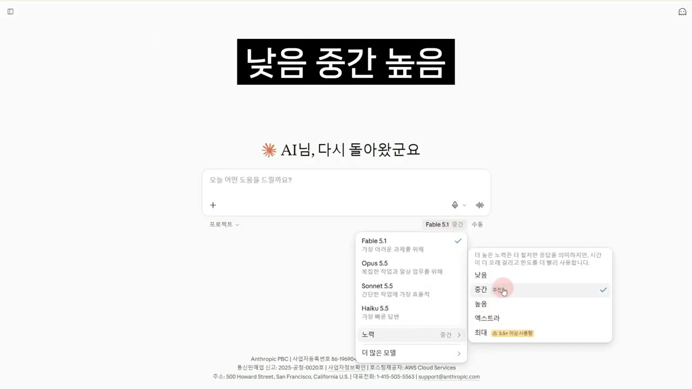
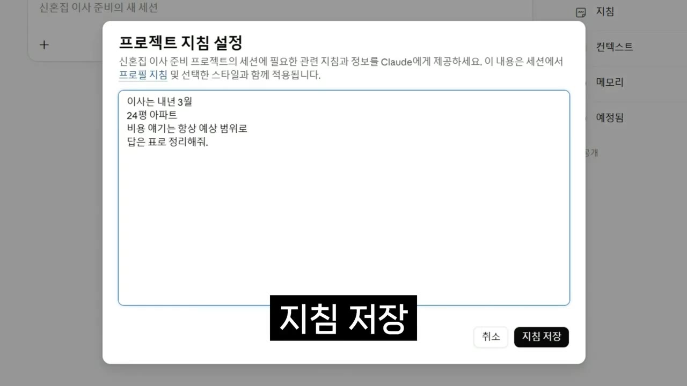
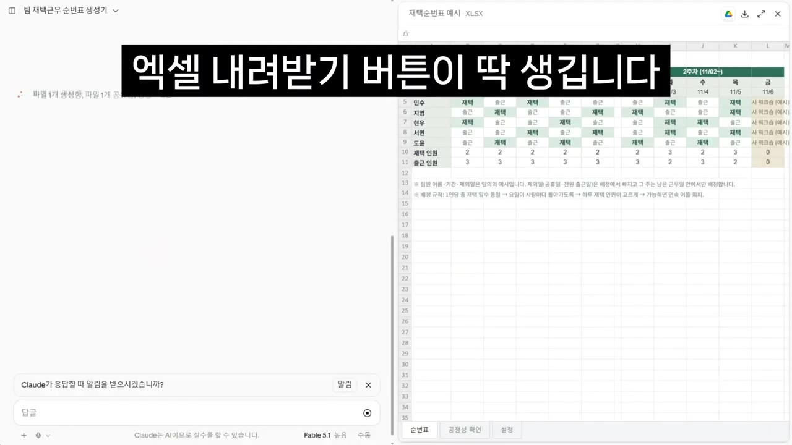
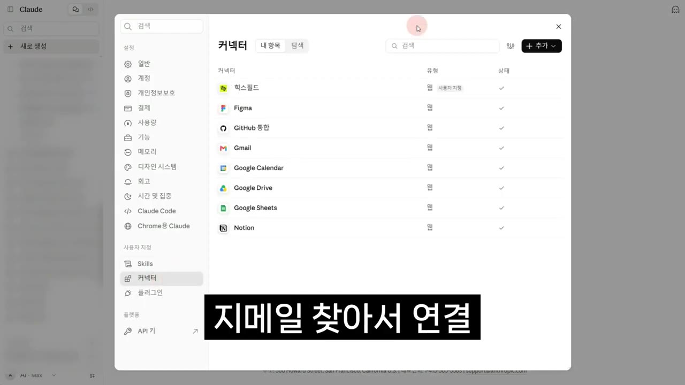
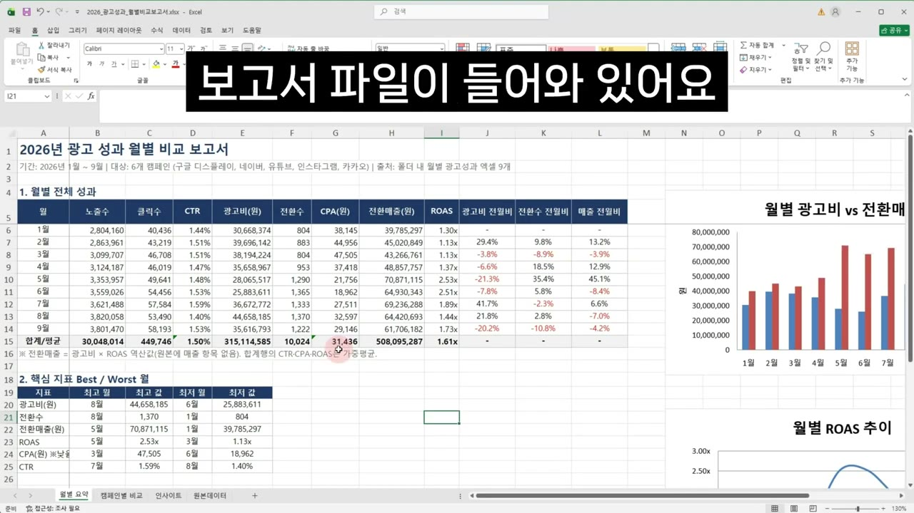
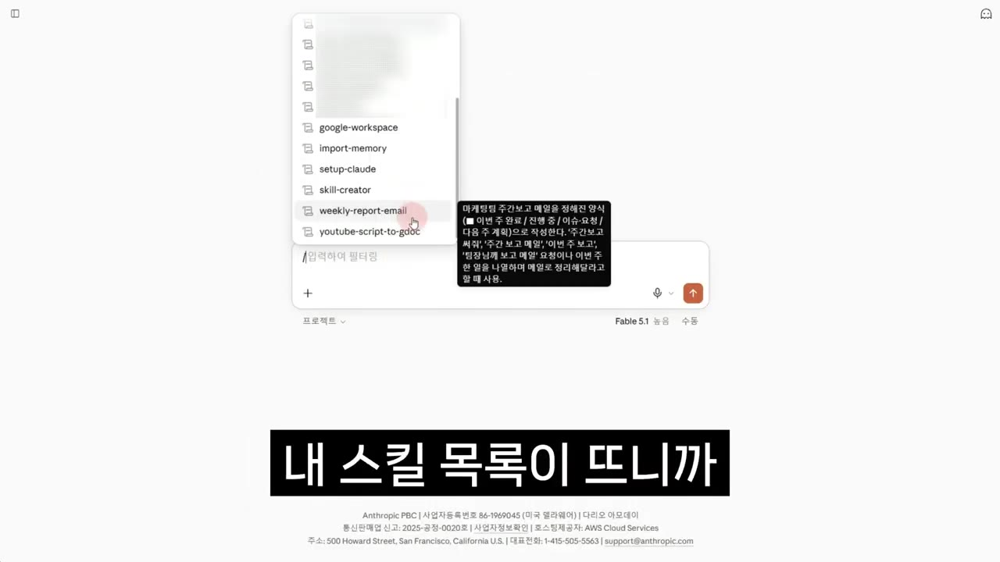
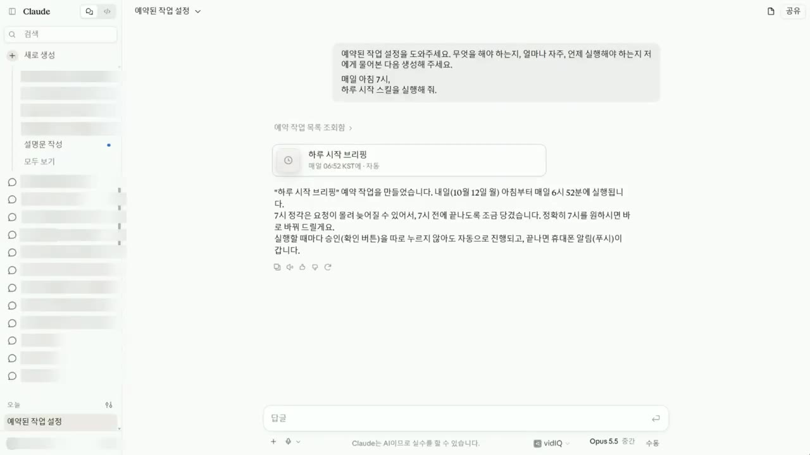

한눈에 보기
- 이 영상은 클로드를 '대답하는 AI'가 아니라 '일을 통째로 맡기는 AI'로 소개하고, 처음 쓰는 사람에게 필요한 기능 7가지를 시연합니다.
- 기본은 두 가지입니다. 설정의 '클로드 지침'에 자기소개 4줄을 적어 두고, '코드 실행 및 파일 생성'을 켜 두면 엑셀(수식 포함)과 PPT를 실제 파일로 받을 수 있습니다.
- 질문은 상황에 따라 세 가지로 나눕니다. 보통은 그냥 묻고, 정답이 하나가 아닌 질문은 '노력'을 높이고, 여러 대상을 비교할 때는 '리서치'(유료)를 씁니다.
- 반복해서 쓸 내용은 저장해 둡니다. '프로젝트'는 그 대화방에서만 쓰는 온보딩 문서, '아티팩트'는 말로 만드는 나만의 프로그램, '스킬'은 어느 대화방에서나 쓰는 내 업무 방식입니다.
- 커넥터(지메일·캘린더·드라이브·내 PC 폴더), 스킬, 예약을 묶으면 매일 아침 7시에 클로드가 일정·답장할 메일·마감 할 일을 미리 정리해 둡니다.
이런 분께 도움이 됩니다
- 챗GPT나 제미나이는 쓰지만 클로드는 처음인 직장인
- 보고서·일정·메일 정리처럼 매주 반복하는 일을 AI에게 넘기고 싶은 사람
- 코딩 없이 작은 업무용 도구(순번표, 투표판 등)를 만들고 싶은 사람
핵심 내용
클로드를 쓰는 이유 (0:00)
영상에서는 AI를 잘 쓰는 사람들이 클로드로 넘어오는 이유를 이렇게 설명합니다. 클로드는 질문에 답만 하는 게 아니라 일을 통째로 맡길 수 있고, 대부분의 기능은 무료 계정으로도 됩니다(유료 기능은 아래에 따로 표시).
① 필수 세팅 — 지침 4줄 (0:46)
지침을 적어 두지 않으면 클로드는 매번 처음 보는 사람에게 하듯 답합니다.
- 가입
- 설정 열기
- 지침 4줄 입력
- 메모리 확인
- 파일 생성 켜기
- 1가입
구글에서 '클로드'를 검색한 뒤 '구글로 계속하기'를 누르면 가입이 끝납니다 (0:53)
- 2설정 열기
왼쪽 아래 내 이름 → 설정 → 계정으로 들어가 아래로 내리면 '클로드 지침' 칸이 있습니다 (1:00)
- 3지침 4줄 입력
클로드에게 나를 소개하는 칸입니다. 아래 예시를 참고하세요 (1:10)

클로드 지침 칸에 4줄 입력, 마지막 줄 '먼저 두세 가지 물어봐' · ▶ 1:37 - 4메모리 확인
왼쪽 '메모리' 메뉴(지난 대화를 기억하는 기능)는 요즘 처음부터 켜져 있으니, 켜져 있는지만 확인합니다 (2:05)
- 5파일 생성 켜기
'기능' 메뉴의 '코드 실행 및 파일 생성'이 꺼져 있으면 엑셀·PPT를 만들 수 없습니다 (2:14)
3단계에 입력할 내용 (영상 예시)
나는 30대 직장인 마케팅팀 대리다. 엑셀은 기본만 한다.
설명은 3줄 안에 결론부터.
전문 용어가 나오면 괄호 안에 쉬운 말로 해줘.
결정이 필요한 질문에는 바로 답하지 말고 나한테 먼저 두세 가지 물어봐.
(자막에는 "데리다"로 받아써져 있어 '대리다'로 보입니다.)
마지막 줄이 핵심입니다. "회사 3년 차인데 이직할까?"라고 물으면 결과가 이렇게 달라집니다.
| 지침 없음 | 지침 있음 | |
|---|---|---|
| 첫 반응 | 연봉·커리어·워라밸·시장 상황 등 10가지를 한꺼번에 나열 | 바로 답하지 않고 먼저 질문 |
| 되묻는 내용 | 없음 | 지금 직무에서 뭐가 제일 답답한지, 연봉이 문제인지 사람이 문제인지, 갈 곳을 정해 두고 묻는 건지 |
| 결과 | 다 맞는 말이지만 내 이야기는 없음 | 내 상황에서 할 수 있는 선택지 딱 2개 |
💡 같은 클로드인데 지침 한 줄 차이로 '일반론'이 '내 상황에 맞는 답'으로 바뀝니다.
② 엑셀·PPT를 실제 파일로 받기 (2:24)
예전처럼 채팅창에 글자로 그린 표를 복사해 붙일 필요가 없습니다. 파일로 달라고 하면 됩니다.
- 엑셀: "친구 넷이서 간 여행 경비 정산 엑셀 파일 만들어줘. 누가 뭘 결제했는지 적는 칸 넣고 각자 얼마씩 보내야 하는지 자동으로 계산되게 해줘" → 다운로드 버튼이 생기고, 열어 보면 수식까지 들어간 진짜 엑셀입니다.
- PPT: "팀 주간 업무 보고 PPT 만들어줘. 이번 주 한 일, 지연된 일, 다음 주 계획, 도움 필요한 것 5장으로" → 대화창 옆에 슬라이드가 바로 뜹니다.
- 수정은 말로 합니다. "표지 좀 밝게 바꾸고 글씨 키워줘"처럼 요청하면 되고, 글자 하나 정도는 직접 클릭해서 고쳐도 됩니다.
- 다 됐으면 PPT나 PDF로 내려받습니다.
- 화면에서 바로 고치는 발표 자료 기능은 유료 계정에 먼저 열렸습니다. 무료 계정은 PPT 파일을 받아서 쓰면 됩니다.

💡 요청 끝에 받을 형태를 정해 주세요. "보고서 써줘"가 아니라 "한 장짜리 PDF로", "다섯 장짜리 PPT로"라고 하면 결과물이 확연히 달라집니다.
③ 물어보는 법 — 그냥 묻기 / 노력 조절 / 리서치 (3:36)
| 방법 | 언제 | 어떻게 | 비용 |
|---|---|---|---|
| 그냥 물어보기 | 대부분의 질문 | 버튼을 건드리지 않고 사람에게 묻듯 입력합니다. 최신 정보가 필요하면 클로드가 알아서 인터넷을 찾습니다 | 무료 |
| 노력 높이기 | 정답이 하나가 아닌 질문 | 입력창 아래 모델 이름 → '노력' → 낮음/중간/높음/엑스트라/최대 중 선택. 평소엔 '중간'이면 충분하고, 머리를 써야 하는 질문만 '높음'으로 올립니다 | 자막상 불분명 |
| 리서치 | 여러 대상을 비교할 때(자격증, 업체 등) | 입력창의 + 버튼 → '리서치'. 사이트 수십 개를 돌며 보고서 한 편으로 정리합니다 | 유료 |
- 그냥 묻기 예시: "이번 주말 서울에서 하는 팝업스토어랑 전시 알려줘" → 날짜, 장소, 출처까지 달아 줍니다.
- 노력 '높음' 예시: "전세 만기가 6개월 남았어. 집주인이 보증금 3천 올려달래. 출퇴근은 지금 40분이고 회사 근처로 가면 월세 120이야. 재계약할지 이사 갈지, 월세로 갈 거면 어느 선까지가 맞는지 이유랑 같이 알려줘" → 3천만 원의 2년 치 이자, 월세 120×24개월, 줄어드는 출퇴근 시간까지 돈으로 환산해 결론을 냅니다.
- 리서치 예시: "퇴직연금 DB형, DC형, IRP 차이를 세금, 수수료, 수령 방식으로 비교해서 보고서로 만들어줘. 출처도 달아줘"

- 노력을 높이면 답이 꼼꼼해지는 대신 느려지고 사용량도 빨리 줄어듭니다. 일단 그냥 묻고, 답이 아쉬울 때만 올리세요.
💡 AI 보고서는 완성본이 아니라 재료입니다. 시험 비용, 법 조항, 계약 조건처럼 틀리면 돈이 나가는 부분만 출처를 눌러 직접 확인하면 됩니다.
④ 프로젝트 — 매번 내 상황을 설명하지 않기 (5:37)
새 대화를 열 때마다 "나는 이런 사람이고 이런 상황이니 이렇게 해줘"를 다시 치는 건 시간 낭비입니다. 프로젝트는 신입에게 한 번 읽히면 되는 '온보딩 문서' 역할을 합니다.
- 프로젝트 생성
- 지침 추가
- 컨텍스트 추가
- 짧게 질문
- 1프로젝트 생성
왼쪽 메뉴 '프로젝트' → 새로 생성 → 이름 '신혼집 이사 준비'. '목표' 칸은 카드에 붙는 한 줄 소개라 비워도 됩니다 (5:58)
- 2지침 추가
생성 후 오른쪽 '지침 추가'에 이 프로젝트에서 지킬 규칙을 적고 저장합니다 (6:10)

프로젝트 지침 설정에 3월·24평·표 정리 규칙 입력 후 저장 · ▶ 6:24 - 3컨텍스트 추가
참고 파일(이사업체 견적서, 영상에서는 샘플)을 넣습니다 (6:25)
- 4짧게 질문
"이 방에서 이사 당일 체크리스트 만들어줘"처럼 상황 설명 없이 요청합니다 (6:30)
2단계 지침 예시
이사는 내년 3월, 24평 아파트.
비용 얘기는 항상 예상 범위로.
답은 표로 정리해줘.
- 결과: 날짜도 평수도 말하지 않았는데 '3월 이사, 24평' 기준으로 시간대별 체크리스트가 나옵니다.
- "견적서 보고 빠진 항목 있는지 확인해줘" → 넣어 둔 파일을 알아서 읽고 사다리차, 에어컨 탈부착처럼 빠진 항목을 짚어 줍니다.
대화가 길어졌을 때 요령 (6:50): 어떤 AI든 대화를 너무 오래 끌면 뒤로 갈수록 답이 이상해집니다. 이럴 땐 새 대화를 열고 첫마디로 이렇게 치세요.
이전 대화에서 이사업체 비교한 거 전부 가져와줘. 거기서부터 이어서 할 거야.
그러면 클로드가 지난 대화를 뒤져 필요한 것만 가져옵니다.
- 프로젝트는 언제 만드나: "이 일은 다음에도 또 하겠다" 싶을 때 만듭니다(월간 보고, 결혼 준비 등).
'묻기'에서 '맡기기'로 (7:20): 지금까지처럼 "요약해줘 → 표로 만들어줘 → 보고서 써줘"를 세 번 치지 말고, "이 자료 보고 이번 달 업무 보고서 만들어줘"라고 한 번에 결과만 말하세요.
💡 단계는 내가 쪼개지 않고 결과만 말하는 것, 이게 '맡기는' 것입니다.
⑤ 아티팩트 — 말로 만드는 나만의 프로그램 (8:04)
팀 재택 순번표 짜기처럼 귀찮은 일(주 2회 공평하게, 휴가자 제외, 월요일 쏠림 방지)을 프로그램으로 만듭니다.
팀 재택근무 순번표 생성기 만들어줘. 팀원 이름 넣고 시작일, 종료일 넣으면
주 2회 재택이 공평하게 돌아가게 짜주고 특정 날짜는 빼는 기능도 넣어줘
- 엔터를 치면 오른쪽에 실제 프로그램이 생깁니다. 팀원 6명, 11월 한 달을 넣으면 달력 모양 순번표와 사람별 재택 횟수가 나옵니다. 만드는 데 1분 걸렸습니다.
- "이거 엑셀로 뽑을 수 있어?"라고 물으면 클로드가 먼저 되물은 뒤 '엑셀 내려받기' 버튼을 추가해 줍니다.
- 오른쪽 위 '공유' 버튼을 누르면 링크가 생겨 팀 슬랙 등에 올릴 수 있습니다.

- 다른 아이디어: 점심 메뉴 룰렛, 월급날 기준 가계부, 동호회 회식 날짜 투표판, 러닝 기록 체크판.
💡 설명이 필요하면 채팅, 쓸 물건이 필요하면 아티팩트를 씁니다.
⑥ 커넥터 — 메일·달력·드라이브·내 PC 연결 (9:15)
커넥터는 클로드에게 내 메일함, 달력, 드라이브에 들어갈 출입증을 끊어 주는 기능입니다. 무료 계정도 됩니다.
- 설정 열기
- 커넥터 메뉴
- 지메일 연결
- 나머지 연결
- 1설정 열기
왼쪽 아래 내 이름 → 설정 (9:30)
- 2커넥터 메뉴
왼쪽 메뉴 아래쪽 '사용자 지정' → '커넥터' (9:33)

커넥터 목록의 Gmail·Google Calendar·Google Drive · ▶ 9:37 - 3지메일 연결
지메일을 찾아 연결 → 구글 로그인 → 허용 (9:36)
- 4나머지 연결
구글 캘린더, 구글 드라이브도 같은 방법으로 연결합니다 (9:39)
- 무엇을 시킬지 모를 때: "지메일 연결했는데 너한테 뭘 시킬 수 있어?" → 메일 찾기, 정리, 초안 쓰기 등 할 수 있는 일을 알려 줍니다.
- 지메일: "지메일에서 지난달 구독 결제 메일만 찾아서 뭐에 얼마 나갔는지 표로 정리해줘" → 넷플릭스, 유튜브 프리미엄, 언제 가입했는지도 모르는 앱까지 찾아냅니다.
- 캘린더: "다음 달 일정 보고 주말에 비는 날 찾아서 러닝크루 오전 7시로 넣어줘" → 빈 주말을 찾아 일정까지 넣습니다.
- 섞어 쓰기: "구글 드라이브에서 결혼 준비 일정표 파일 찾아서 거기 적힌 날짜를 전부 내 캘린더에 넣어줘" → 손으로 하면 10개에 20분 걸릴 일이 한마디로 끝납니다.
내 컴퓨터 폴더 (10:40): 클로드 앱에서 입력창 + → '폴더 추가' → 폴더 선택 → 허용
이 폴더에 있는 엑셀 전부 보고 월별 성과 비교한 보고서 만들어서 이 폴더에 저장해줘
- 클로드가 파일을 하나씩 읽고 비교해 보고서를 만든 뒤 그 폴더에 저장합니다. 내가 허용한 폴더만 봅니다.

- 노션, 캔바, 피그마, AI 영상 서비스 '힉스피드'(자막 표기)도 연결됩니다. 힉스피드는 계정이 따로 있어야 합니다. 이 서비스로 영상을 만드는 시연은 자막이 중간에 끊겨 구체적인 입력 내용을 알 수 없습니다(자막상 불분명).
⑦ 스킬 + 예약 — 매일 하는 일 맡기기 (11:35)
스킬은 유료 기능입니다. 사진 앱에서 내 필터를 저장해 두는 것처럼, 내가 일하는 방식을 저장해 두는 기능입니다.
- 챗GPT의 GPTs는 메일용, 보고서용처럼 챗봇이 계속 늘고 서로 연동되지 않습니다. 클로드 스킬은 저장만 해 두면 한 화면에서 알아서 꺼내 씁니다.
주간보고 스킬 만들기 (12:25): 예전에 팀장님 반응이 좋았던 주간보고 메일 두 개를 넣고 이렇게 요청합니다.
이 메일 형식 분석해서 똑같은 양식으로 주간보고 메일 쓰는 스킬 만들어줘. 답은 한국어로
- 클로드가 제목 뽑는 법, '한 일 → 이슈 → 다음 주' 순서, 문장 끝맺는 방식까지 뜯어보고 스킬로 만듭니다. '저장'을 누르면 끝입니다.
- 저장한 스킬은 설정 → 사용자 지정 → '스킬'에서 볼 수 있습니다.
- 새 대화에서 "이번 주 한 일 세 개 + 주간보고 메일 써줘"라고만 해도 알아서 스킬을 꺼내 팀 양식대로 씁니다. 안 꺼내면 입력창에
/를 쳐서 스킬 목록에서 고릅니다.

| 프로젝트 | 스킬 | |
|---|---|---|
| 비유 | 그 방 전용 온보딩 문서 | 어느 방에 가도 따라다니는 내 필터 |
| 적용 범위 | 해당 프로젝트 대화만 | 모든 대화 |
커넥터 + 스킬 + 예약 = 아침 자동 정리 (13:10)
- 스킬 요청
- 질문에 답하기
- 수동 실행 확인
- 예약 걸기
- 1스킬 요청
새 대화에서 "스킬 만드는 거 도와줘"라고 한 뒤 원하는 동작을 적습니다 (13:15)
- 2질문에 답하기
클로드가 몇 가지 물어보면 편하게 답하고, 다 되면 저장합니다 (13:41)
- 3수동 실행 확인
새 대화에서 "하루 시작"이라고만 쳐서 일정·메일·할 일이 한 번에 나오는지 봅니다 (13:48)
- 4예약 걸기
왼쪽 메뉴 '예약됨' → 새 작업 → 매일 아침 7시, 할 일에 "하루 시작 스킬 실행해줘" (14:00)

매일 아침 7시 '하루 시작 브리핑' 예약 작업을 만든 대화 · ▶ 14:04
1단계에 입력할 내용
스킬 만드는 거 도와줘.
'하루 시작'이라고 치면 구글 캘린더에서 오늘 일정 보여주고,
지메일에서 답장 못 한 메일만 골라주고,
구글 드라이브 할 일 파일에서 오늘 마감인 것만 뽑아줘.
- 결과: 아침 7시에 클로드가 달력, 메일, 할 일을 보고 정리해 두어 폰을 열면 도착해 있습니다.
💡 커넥터는 출입증, 스킬은 내 방식, 예약은 알람입니다. 다만 마지막엔 꼭 내 눈으로 한 번 확인하세요.
마무리 — 하나만 골라 오늘 해 보기 (14:20)
영상에서는 AI를 잘 쓰는 사람과 못 쓰는 사람의 차이를 "한 번 맡겨 봤냐 안 맡겨 봤냐"로 봅니다. 어떤 걸 해 볼지 고르는 기준은 이렇습니다.
- 메일을 많이 주고받는다 → 커넥터
- 매주 같은 보고서를 쓴다 → 스킬
- 팀 일정 짜는 게 일이다 → 아티팩트
- 그것도 아니면 → 지침 4줄
따라 해보기
준비물
- 클로드 계정(구글 계정으로 가입), 무료로 시작 가능
- 유료가 필요한 것: 리서치, 스킬, 화면에서 바로 고치는 발표 자료 편집(유료 우선 제공). 예약 기능의 요금제 조건은 영상에 나오지 않습니다.
- 내 PC 폴더 연결: 클로드 앱(설치형)
- 힉스피드 연결 시 힉스피드 계정 별도 필요
- 소요 시간: 기본 세팅 3분, 스킬과 예약까지 약 10~20분(보충 추정)
단계별 방법
- 지침 입력
- 기능 확인
- 파일 받아 보기
- 프로젝트 생성
- 커넥터 연결
- 스킬 만들기
- 예약 등록
- 1지침 입력
내 이름 → 설정 → 계정 → '클로드 지침'에 위 4줄 예시를 내 상황으로 바꿔 적습니다
- 2기능 확인
메모리가 켜져 있는지, '기능' 메뉴의 '코드 실행 및 파일 생성'이 켜져 있는지 확인합니다
- 3파일 받아 보기
"여행 경비 정산 엑셀 파일 만들어줘…"처럼 받을 형태(엑셀, 5장 PPT 등)를 정해 요청합니다
- 4프로젝트 생성
왼쪽 '프로젝트' → 새로 생성 → '지침 추가'에 규칙 → '컨텍스트 추가'에 참고 파일
- 5커넥터 연결
설정 → 사용자 지정 → 커넥터에서 지메일·캘린더·드라이브를 각각 연결(구글 로그인 → 허용)
- 6스킬 만들기
새 대화에서 "스킬 만드는 거 도와줘" + 원하는 동작을 적고, 질문에 답한 뒤 저장합니다(유료)
- 7예약 등록
왼쪽 '예약됨' → 새 작업 → 매일 07:00, "하루 시작 스킬 실행해줘"
따라 할 수 있는지 점검
- ✅ 바로 따라 할 수 있음: 1단계 지침 입력, 2단계 기능 확인, 3단계 파일 요청, 4단계 프로젝트 생성, 5단계 커넥터 연결 (메뉴 경로와 입력 예시가 영상에 나옵니다).
- ⚠️ 6단계 「스킬 만들기」: 유료 요금제가 필요합니다. 유료 플랜 이름과 가격은 영상에 나오지 않으니 클로드 설정의 요금제 화면에서 확인하세요.
- ⚠️ 6단계 「스킬 만들기」: '구글 드라이브 할 일 파일'이 어떤 형식(문서인지 시트인지, 어떤 열이 있는지)인지 영상에 안 나옵니다. 마감일 열이 있는 할 일 파일을 미리 만들어 두고, 스킬을 만들 때 클로드가 묻는 질문에 그 파일 이름을 알려 주세요(보충).
- ⚠️ 7단계 「예약 등록」: 예약 결과를 어디서 어떻게 알림 받는지("폰 열면 와 있습니다")는 설정 방법이 나오지 않습니다. 실행 시각과 결과 위치는 영상 14:07 화면에서 확인하세요.
- ⚠️ 커넥터 「힉스피드」: 시연 부분 자막이 끊겨 입력한 프롬프트를 알 수 없습니다. 설명란의 프롬프트 공유 링크를 참고하세요.
- ❓ '노력' 메뉴가 무료 계정에서도 보이는지, 모든 단계를 쓸 수 있는지는 영상에서 말하지 않습니다.
- ❓ 영상 속 메뉴 이름('클로드 지침', '예약됨' 등)은 앱 버전에 따라 다르게 표시될 수 있습니다(보충).
확인 방법
- 지침: 이직처럼 결정이 필요한 질문을 했을 때 클로드가 바로 답하지 않고 먼저 2~3가지를 되물으면 성공입니다.
- 파일 생성: 다운로드 버튼이 생기고, 받은 엑셀을 열었을 때 셀에 수식이 들어 있으면 성공입니다.
- 스킬: 새 대화에서 스킬 이름을 말하지 않아도 내 양식대로 결과가 나오면 성공입니다.
- 예약: 다음 날 아침 7시 이후 '예약됨' 메뉴나 대화 목록에 결과가 있는지 확인합니다(보충).
막히면
- 엑셀·PPT가 안 만들어지면 → '코드 실행 및 파일 생성'이 꺼져 있는지 확인하세요.
- 대화가 길어져 답이 이상해지면 → 새 대화를 열고 "이전 대화에서 ○○ 한 거 전부 가져와줘. 거기서부터 이어서 할 거야"라고 치세요.
- 스킬을 알아서 안 꺼내면 → 입력창에
/를 쳐서 스킬을 직접 고르세요. - 노력을 너무 높이면 → 답이 느려지고 사용량이 빨리 닳습니다. 평소엔 '중간'으로 두세요.
기억할 숫자·인용
- 지침 4줄, 세팅에 3분
- 전세 예시: 만기 6개월, 보증금 인상 3천, 출퇴근 40분, 월세 120, 24개월로 비교
- 재택 순번표: 팀원 6명, 11월 한 달, 주 2회, 만드는 데 1분
- 드라이브 일정을 캘린더로 옮기기: 손으로 하면 10개에 20분, 클로드는 한마디
- 예약: 매일 아침 7시에 '하루 시작' 스킬 실행
- "AI 보고서는 완성본이 아니라 재료예요."
- "설명이 필요하면 채팅, 쓸 물건이 필요하면 아티팩트"
- "한 번 맡겨 봤냐 안 맡겨 봤냐"
생각해볼 점
- (영상 내용) 대부분 무료로 된다고 하지만, 영상의 하이라이트인 스킬과 리서치는 유료입니다. (내 의견) 실제로 자동화까지 하려면 결제를 전제로 생각하는 게 현실적입니다.
- (내 의견) 메일함, 캘린더, 드라이브, PC 폴더에 접근을 허용하는 일입니다. 회사 메일이나 업무 자료를 연결하기 전에 사내 보안 규정을 확인하세요.
- (영상 내용) 전세·퇴직연금 예시는 클로드 사용법을 보여 주는 예시일 뿐입니다. 영상도 돈과 관련된 항목은 출처를 직접 확인하라고 강조합니다.
바로 해볼 일
- 설정 → 계정 → '클로드 지침'에 나에 맞춘 4줄(특히 "결정이 필요한 질문엔 먼저 두세 가지 물어봐") 적기
- '코드 실행 및 파일 생성'을 켜고, 이번 주 업무로 "5장짜리 PPT로" 주간 보고 받아 보기
- 지메일을 연결하고 "지난달 구독 결제 메일만 찾아서 표로 정리해줘" 실행해 보기